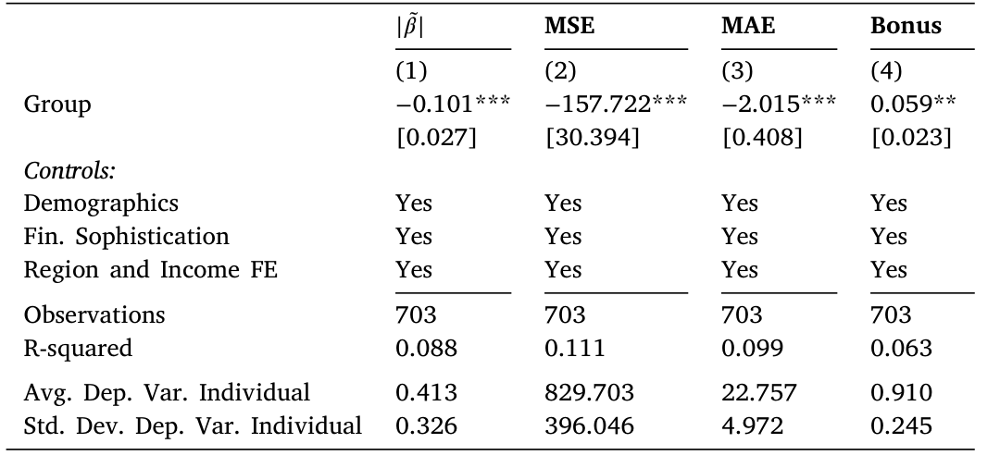
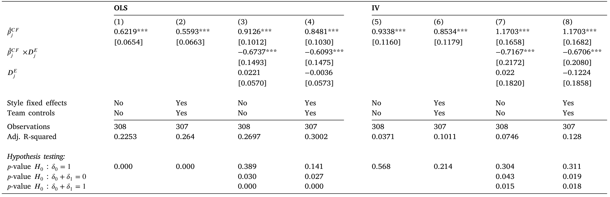
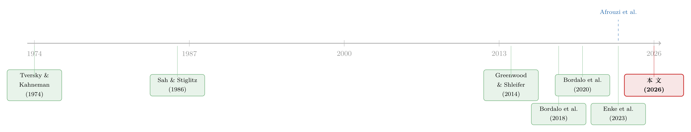

三个臭皮匠，反而没那么容易上头？——团队如何驯服信念里的「过度反应」
本文读的是 Barahona, Cassella, Jansen & Pezone (2026, Journal of Financial Economics)：用预注册的随机对照实验直接测量人们对未来收益的预期，作者发现团队比个人更少「追涨杀跌」式的过度反应——团队的过度反应比个人低约 30%。而真正的发现不在「低多少」，而在「为什么低」：把这个团队效应拆开后，70%–90% 来自一个朴素的机制——最容易上头的那个人，会主动选择少说话。
1 引言：一个被反复证明、却从未被追问的事实
过去十年，行为金融里最坚实的一块经验事实，恐怕就是「过度反应」（overreaction）。无论是在调查里（Greenwood and Shleifer, 2014）、在宏观预期里（Bordalo et al., 2020），还是在精心设计的实验室任务里（Afrouzi et al., 2023），人们一次又一次地表现出同一种毛病：对刚刚发生的事赋予了过高的权重。一只股票最近涨得好，人们就预期它接着涨；一段历史刚刚转弱，人们就预期坏日子会持续。可问题是，未来收益对过去收益的预测能力本就很弱——于是这种「外推」（extrapolation）式的信念，系统性地偏离了理性基准。
这块事实已经被打磨得近乎无可辩驳。但它有一个几乎从未被认真追问的前提：所有这些证据，几乎都来自「一个人」。
而现实世界里，最重要的那些判断，恰恰不是一个人做的。一国的货币政策由委员会拍板，一只基金的持仓由投资团队投票，一笔并购由董事会表决。如果个体普遍会上头，那么把几个会上头的人凑到一起，结果会更好，还是更糟？
直觉在这里是分裂的。一派乐观的看法可以追溯到 Sah and Stiglitz (1986)：团队成员能互相挑出对方判断里的毛病，于是「三个臭皮匠顶个诸葛亮」。但另一派同样有力——认知心理学告诉我们，人们共享着同一套直觉启发式（heuristics, Tversky and Kahneman, 1974），既然偏误的来源是共通的，那么把它们叠在一起未必能抵消；更糟的是，团队里还可能滋生「群体迷思」（groupthink, Janis, 1972），让个体的偏误在相互附和中被放大。
所以这篇论文的标题本身就是一个干净的二选一：Do teams alleviate or exacerbate overreaction? 团队，究竟是缓解，还是加剧了这种弥漫在个体身上的过度反应？这是一个纯粹的经验问题，而它此前几乎是空白。
2 实验室里的一把尺子
要回答这个问题，第一步是得有一把能直接量出「过度反应」的尺子。作者借用了 Afrouzi et al. (2023) 那套已经成为业内标准的认知任务，并把它改写成一个预测股票收益的场景。
被试在 Labvanced 平台上、通过 Prolific 招募，看到一只虚构美股的历史收益序列 \(x_t\)。这个序列服从一个 AR(1) 过程：
$$x_t = \rho x_{t-1} + \varepsilon_t, \qquad \varepsilon_t \sim (0, \sigma^2)$$
关键的设定是 \(\rho = 0\)、\(\sigma = 20\)。也就是说，过去的收益对未来收益毫无预测力——这是实验员精心控制的「上帝视角」。被试需要预测下一期收益，连做 20 轮，每一轮都按预测精度拿钱。得分函数是
$$S_t = 100 \times \max\!\left(0,\; 1 - |FE_t|/\sigma\right)$$
其中 \(FE_t\) 是第 \(t\) 轮的预测误差。这个分数再除以 600 折算成美元。补偿标准是每小时 $9，平均到手 $6.09、折合每小时 $12.17，跟 Prolific 推荐的 $12 时薪基本持平——足够让人认真对待。
有了数据，怎么把「过度反应」变成一个数字？对每个被试 \(i\)，作者跑一条时间序列回归：
这把尺子的妙处在于：理性基准是一个干净的零点。\(\beta_i = 0\) 意味着完全不外推，\(\beta_i > 0\) 就是过度反应，而且 \(\beta_i\) 的大小直接就是过度反应的强度。Afrouzi et al. (2023) 已经证明，绝大多数人的 \(\beta_i\) 显著为正。
接着，一个自然的问题是：怎么把「团队」塞进这把尺子里？作者的做法干净利落——把被试随机分配到「个人」（Individual, \(I\)）或「团队」（Group, \(G\)）两个处理组。团队组里，两个陌生人被随机配对，通过一个实时聊天框讨论，必须就一个共同预测达成一致才能进入下一轮。这一步是整篇论文的地基：因为是随机分配，团队与个人之间的差异就能被干净地解释为「团队」这件事本身的因果效应，而不是「爱组队的人本来就不一样」这种选择性。
最终样本是 1512 个观测：个人组 248、团队组 456，外加后面要讲的两个机制处理组（内部反思组 405、自我选择组 403）。所有处理都在 2024 年 5 月预注册、6 月入场（RCT 编号 AEARCTR-0013710），自我选择组则在 11 月单独预注册（AEARCTR-0014914）——预注册这一点，让「事后挑结果」的嫌疑降到了最低。
（这把「实验室里的尺子去丈量真实世界」的思路，和此前读过的《外推者与逆向者：一把在实验室里量出来的尺子，丈量真实世界的买卖》一脉相承——只不过这次量的不是「谁」外推，而是「几个人一起」会不会少外推。）
3 基准结果：团队少上头了三成
先看最朴素的对照。复制了文献里「个体普遍过度反应」这一既有结论之后，作者比较了团队组与个人组的 \(\beta\)。结果很干脆：团队的过度反应比个人低约 30%，而且在各种设定下都稳健。把所有规格放在一起，这个降幅落在 30% 到 55% 之间。
这是一个不小的量级。它直接否决了「群体迷思放大偏误」那一派的悲观预期——至少在这个收益预测任务里，团队不是在彼此附和着一起冲昏头脑，而是实实在在地把过度反应往回拉了一截。

表 5：团队（Group）相对个人在过度反应 \(|\tilde\beta|\)、MSE、MAE 与奖金上的差异——团队系数在各列均显著为负。
如表 5 所示，无论从哪个角度估计，团队系数都显著低于个人。但读到这里，一个真正懂行的读者不会满足。降三成，是好事；可这三成是怎么来的？——这才是这篇论文区别于「又一个团队 vs. 个人」实验的地方。
4 真正关键的一步：把「团队效应」拆开
这是全文的转折，也是它最漂亮的贡献。作者说，团队之所以少上头，理论上至少有三条不同的路，而它们的政策含义截然不同。于是他们用额外的预注册处理组，把这三条路一条条隔离出来——这在「不确定性下的判断」这一文献里，据作者所知是头一回做定量分解。
第一条路：内部反思（internal reflection）。也许仅仅是「知道一会儿要跟人讨论」，就逼着人从直觉的快思考切换到审慎的慢思考（Frederick, 2005）。为了测它，作者设计了一个处理组：团队成员在讨论之前先各自独立预测一遍。如果光是「准备讨论」这个动作就能降低偏误，那这一组应该已经显现出改善。
第二条路：自我选择（self-selection）。也许团队的改善根本不来自「讨论让人变聪明」，而来自一个更朴素的事实——偏误小的人更愿意主导决策，偏误大的人则退让（Enke et al., 2023）。为了精准捕捉它，作者设计了另一个处理组：两个成员各自做预测，并为自己的预测投票，得票最高的预测成为团队预测。注意，这里没有任何讨论，纯粹是「谁愿意站出来拍板」的博弈。
第三条路：外部筛查（external screening）。这是讨论本身的功劳——把想法摊到桌面上接受对方的审视，而人往往更容易发现别人的偏误而非自己的（Pronin et al., 2002）。在分解里，它被定义为「团队效应」扣掉前两条之后的残差。
于是反转出现了。分解的结论是：团队与个人之间那道过度反应的差距，70% 到 90% 来自自我选择，内部反思和外部筛查只扮演了配角。换句话说——
团队之所以更冷静，主要不是因为「讨论让人想得更深」，也不是因为「同伴帮你挑错」，而是因为最容易上头的那个人，自己选择了少出力。最大的智慧，是知道什么时候该闭嘴。

表 8：田野证据——过度反应从个人到团队的传导。OLS（1–4）与 IV（5–8）估计，交互项 \(\hat\beta^{CF}_j\times D^E_j\) 刻画自我选择通道的作用。
如表 8 的回归所示，自我选择这一通道吃下了绝大部分的团队效应。这个结论之所以有力，是因为它有一个独立的验证：作者还用大语言模型（large language model, LLM）去读了团队组里收集到的大约 1.8 万条聊天记录，从交流模式里同样读出了自我选择的主导地位——文本证据和实验分解互相印证。
5 一个被忽略的细节：自我选择是「动态」的
如果你以为自我选择只是「聪明人天生爱主导」，那还不够。作者利用 20 轮重复任务这个结构，挖出了一个更精细的事实：如果一个人在上一轮犯了很大的预测误差，他在这一轮就会给自己的预测投更少的票。
这说明什么？说明团队成员在实时地学习自己的能力，并据此动态地选择进入或退出决策核心。领导权不是固定的——人们愿意在收到「你上次判断得不好」的反馈后，把话语权让出去。自我选择因此不是一张静态的座次表，而是一个会随反馈自我纠偏的过程。这一点，恰恰是它能在重复决策环境里持续奏效的原因。
6 从实验室走向真实世界：两万五千亿美元的检验
实验室再干净，也总有人问：这关现实什么事？于是作者把场景搬到了真实的高风险环境——美国股票型共同基金，2023 年合计管理着超过 25 万亿美元资产。
这里没有随机分配，怎么办？作者的识别策略很聪明：他们盯住那些「既单独管过基金、又在团队里管过基金」的同一批经理，做一个被试内设计（within-subject design），比较同一个人在「单飞」和「组队」两种状态下的行为。这样就把「团队基金的经理本来就和单飞经理是两类人」这个致命的混淆变量摁住了。
测量上，由于无法直接问经理「你预期未来涨多少」，作者退而求其次，用 Jin and Sui (2022) 的思路，把过度反应定义为经理的股票交易对「过去收益加权和」的敏感度——越近的收益权重越高，权重的衰减则用调查里直接估出的外推信念来校准。他们先证明了这个基于交易的度量确实指向后续的业绩跑输（这说明它捕捉的是偏误而非偏好），再去比较单飞与组队。
结论与实验室惊人地一致：团队把过度反应削减了最多 50%。而且这个结果(i) 对多种估计方式稳健；(ii) 无法用团队与单飞之间的薪酬结构差异解释；(iii) 不是「学会本事后才去组队」的学习效应——因为在「同时单飞又组队」的更小样本里结果照旧；(iv) 不是度量误差，作者用了 Jegadeesh et al. (2019) 那套工具变量来排除。
实验室给出了因果，田野给出了外部有效性——两条腿都立住了。
7 文献脉络
把这篇论文放回它的坐标系里，会看得更清楚。
源头有两条河。一条是偏误与启发式：从 Tversky and Kahneman (1974) 奠定的「人靠直觉启发式做判断、因而系统性犯错」，到 Greenwood and Shleifer (2014) 在金融市场里把「外推信念」量化，再到 Bordalo et al. (2020) 把过度反应推广到宏观预期，最后到 Afrouzi et al. (2023) 把它压进一个可控的实验室任务——本文用的尺子，正是从这条河里取来的。
另一条河是团队决策：从 Sah and Stiglitz (1986) 关于「团队能互相纠错」的理论，到 Charness and Sutter (2012) 发现团队在某些自利决策上更理性，再到与本文最近的 Enke et al. (2023)——后者也研究团队里的自我选择，但只关心它对「认知任务表现」的影响。

本文站在两条河的交汇处，做了三件前人没做的事：第一，把「团队 vs. 个人」这个老问题，第一次接到「信念过度反应」这个具体而坚实的现象上；第二，不止于「团队更冷静」这个事实，而是定量地把它分解到自我选择、内部反思、外部筛查三条机制，并指认出自我选择的主导地位；第三，用 LLM 文本和共同基金田野证据，给实验室结论加上了两道独立的旁证。
8 评论与延伸（Q&A + 研究方向）
(a) 几个可能的疑问
Q：β 只是「对最近一期收益的敏感度」，会不会团队只是在「随机折中」，而不是真的更理性？
这正是分解要排除的。如果团队只是机械地把两人预测取平均，那降幅应该均匀来自双方；但数据显示降幅主要来自「偏误大的人主动少投票」这一非对称的自我选择，且越犯错越退让——这是有方向的行为，不是噪声相消。
Q：ρ=0 是不是把任务设得太极端了？现实里收益总有一点动量。
作者在附录里做了 ρ=0.2 的稳健性复制，结论很相似。设 ρ=0 的好处是理性基准恰好等于零，尺子最干净；适度引入持续性并不改变定性结论。
Q：实验室里两个 Prolific 陌生人聊几句，能代表真实投资委员会吗？
单看实验确实有外部有效性的担忧。但论文的力量在于「实验室因果 + 共同基金田野」的双轨：田野里是真金白银、有职业生涯压力的基金经理，被试内设计也把人选差异摁住了，两边给出 30%–50% 高度一致的量级，互相背书。
Q：自我选择主导，是不是意味着「讨论」其实没用、团队多此一举？
不能这么读。讨论恰恰是自我选择得以发生的载体——没有一个让人「亮出预测、互相看见、决定退让」的互动场景，自我选择无从启动。外部筛查的直接贡献虽小，但它和自我选择在机制上是缠绕的。
Q：团队更冷静，等于团队赚得更多吗？
在田野部分，作者先证明了基于交易的过度反应度量指向后续跑输，因此「少过度反应」确实对应「少踩坑」。但论文的主张是关于偏误而非阿尔法，把它直接等同于超额收益要小心。
Q：会不会是「两个人更慢、更懒得调仓」造成的假象？
作者专门排查了薪酬结构、有限理性约束、学习效应、度量误差等替代解释（含 IV），团队效应在这些控制后依然存在，因此不太像单纯的「惰性」。
(b) 几个可能的研究问题与提案
1. 把这套机制搬到公司债/信用市场的投资委员会
【经济故事】信用市场的久期与违约判断高度依赖对「最近违约潮/利差走向」的外推，且决策几乎都由信评委员会集体做出。如果自我选择机制成立，那么委员会里「最容易追涨利差」的成员会在高压期主动退让，团队信用判断应当比单个分析师更不易追涨杀跌。 【可行性】中。需要基金或保险公司的内部信评/交易记录区分「个人 vs. 委员会」决策，这类数据获取难；可退而求其次，用团队管理 vs. 单人管理的信用债基金，复制本文的被试内设计。
2. 外资持有人的「团队结构」与过度反应
【经济故事】跨境投资者往往以更大、更制度化的团队运作。若团队削减过度反应，那么外资占比高的资产，其价格对「近期收益」的外推敏感度应当更低、定价更稳。这能把本文的微观机制接到「外资是否稳定市场」这一宏观争论上。 【可行性】中。需要把持有人按「团队化程度」分层，并构造资产层面的外推敏感度度量；识别上要处理外资自我选择进入哪些资产的内生性。
3. LLM 文本特征能否「预测」一个团队会不会上头？
【经济故事】本文已经用 LLM 从 1.8 万条聊天里读出自我选择的痕迹。下一步是把交流模式（谁先发言、谁让步、措辞的确定性）做成可度量的特征，检验它们能否事前预测团队预测的偏误，从而把「好团队」的沟通指纹刻画出来。 【可行性】高。聊天数据已在复制包内，LLM 文本特征化是现成技术，主要工作量在特征工程与样本外验证。
4. 自我选择的动态学习：反馈频率会改变结果吗？
【经济故事】本文发现「上一轮错得多 → 这一轮少投票」。如果减慢或加快反馈，自我选择的自我纠偏会变强还是变弱？这直接关系到现实里「业绩考核频率」如何影响团队偏误。 【可行性】高。在同一实验范式里随机化反馈的频率与精度即可，是一个干净、低成本的后续实验。
5. 团队规模与「最优臭皮匠数」
【经济故事】两人团队已能削减三成过度反应。但人一多，群体迷思的风险上升、自我选择的协调成本也上升——降幅会不会先升后降，存在一个最优团队规模？ 【可行性】中。把团队规模（2/3/5 人）作为处理维度即可识别，难点在样本量与聊天协调的实现成本。
我的判断。这篇论文最让我欣赏的，不是「团队更冷静」这个结论本身（它当然重要），而是它拒绝停在结论上。把一个黑箱效应定量分解成三条可证伪的机制，并干净地指认出自我选择的主导地位——这是从「现象描述」走向「机制理解」的一步，行为金融里这样的工作并不多。LLM 旁证和共同基金田野则展现了少见的方法论野心。
要说担忧，我有两点。其一，田野部分缺乏随机分配，被试内设计虽然控住了人选差异，但「同一经理为何在某些时点选择组队」本身可能与市场状态相关，外推敏感度的度量也是间接的、依赖于权重校准的合理性。其二，分解里「外部筛查=残差」的定义偏弱——它把一切未被前两个处理捕捉的东西都归进去，因此「外部筛查贡献小」更像是「其余部分小」，而非对讨论价值的直接否定。
后续我最想看到的，是把这套自我选择机制接到真实的、有持仓后果的信用/外资团队决策上去：实验室告诉了我们「最容易上头的人会闭嘴」，但在年薪、声誉与办公室政治都真实存在的房间里，最该闭嘴的人，是否还愿意闭嘴？这才是这条研究脉络下一个真正昂贵、也真正值得的问题。
参考文献
- Afrouzi, H., Kwon, S.Y., Landier, A., Ma, Y., Thesmar, D. (2023). Overreaction in expectations: Evidence and theory. Quarterly Journal of Economics 138(3), 1713–1764.
- Augenblick, N., Lazarus, E., Thaler, M. (2024). Overinference from weak signals and underinference from strong signals. Quarterly Journal of Economics 140(1), 335–401.
- Bordalo, P., Gennaioli, N., Shleifer, A. (2018). Diagnostic expectations and credit cycles. Journal of Finance 73(1), 199–227.
- Bordalo, P., Gennaioli, N., Ma, Y., Shleifer, A. (2020). Overreaction in macroeconomic expectations. American Economic Review 110(9), 2748–2782.
- Charness, G., Sutter, M. (2012). Groups make better self-interested decisions. Journal of Economic Perspectives 26(3), 157–176.
- Da, Z., Huang, X., Jin, L.J. (2021). Extrapolative beliefs in the cross-section: What can we learn from the crowds? Journal of Financial Economics 140(1), 175–196.
- Enke, B., Graeber, T., Oprea, R. (2023). Confidence, self-selection, and bias in the aggregate. American Economic Review 113(7), 1933–1966.
- Greenwood, R., Shleifer, A. (2014). Expectations of returns and expected returns. Review of Financial Studies 27(3), 714–746.
- Janis, I.L. (1972). Victims of Groupthink: A Psychological Study of Foreign Policy Decisions and Fiascoes. Houghton Mifflin.
- Jegadeesh, N., Noh, J., Pukthuanthong, K., Roll, R., Wang, J. (2019). Empirical tests of asset pricing models with individual assets. Journal of Financial Economics 133(2), 273–298.
- Jin, L.J., Sui, P. (2022). Asset pricing with return extrapolation. Journal of Financial Economics 145(2), 273–295.
- Sah, R.K., Stiglitz, J.E. (1986). The architecture of economic systems: Hierarchies and polyarchies. American Economic Review 76(4), 716–727.
- Tversky, A., Kahneman, D. (1974). Judgment under uncertainty: Heuristics and biases. Science 185(4157), 1124–1131.